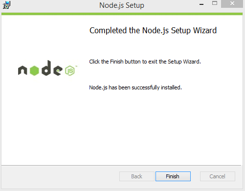
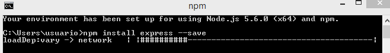
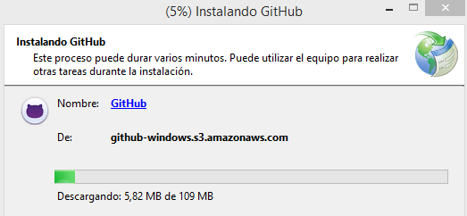
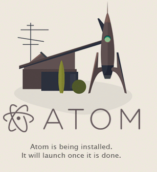

En Windows es bastante facil, vas a la página oficial de node.js, lo descargas, ejecutamos el archivo descargado y aceptamos los terminos y siguiente cuando lo pida.
Para usarlo ponemos el comando node y escribimos codigo en javascript.
En la consola hacemos un npm init y rellenamos los datos y luego usamos el comando npm install express --save
Al igual que con el Node.js, vas a la página oficial, lo descargas y o ejecutas.
Una vez más, desde la página te lo descargas y se instala fácil.
Markdown es un lenguaje de marcado ligero, lo vamos a utilizar en el editor de texto Atom ya que incorpora por defecto este formato y podremos obtener un live preview mientras vamos desarrollando además de poder exportarlo a HTML sin la necesidad de usar un conversor adicional.
Sintaxis:
Encabezados
# Encabezado H1
## Encabezado H2
### Encabezado H3
Tipografía
**Negrita**
*Cursiva*
> Citas
Parrafo separar por lineas en blanco
`Codigo`
Recursos

* [Links](https://example.com)
Listas
1. Lista 1
2. Lista 2
* Lista 1
* Lista 2
Recursos: